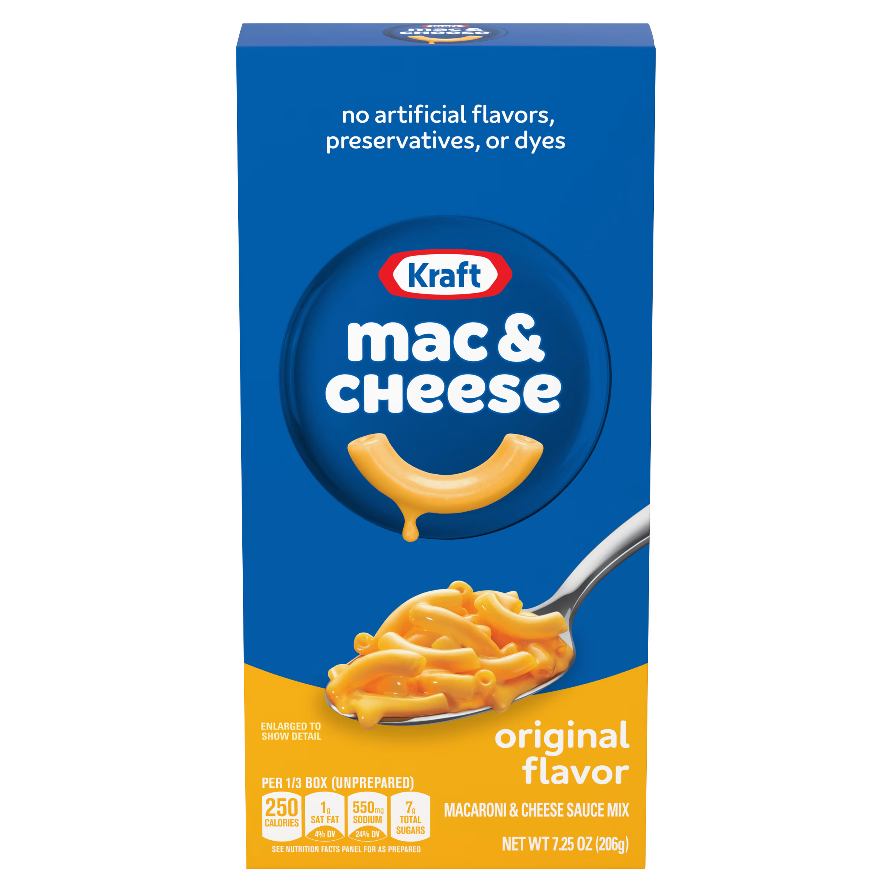
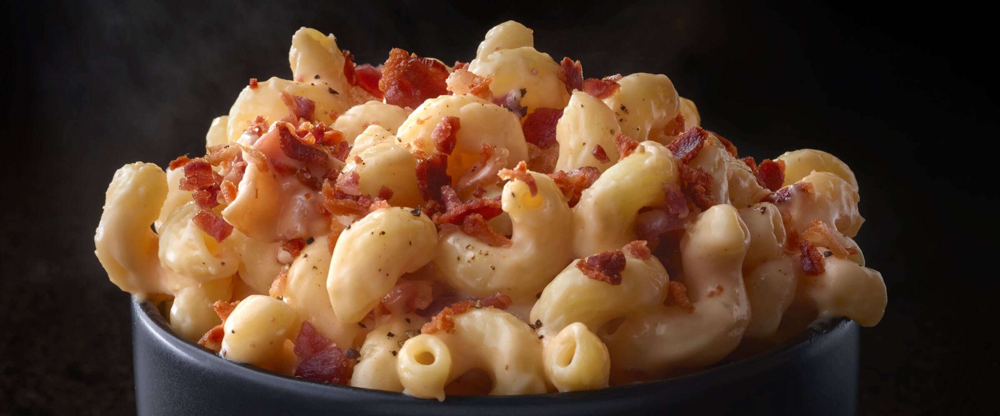

Bacon Mac & Cheese
Prep time: 5 min | Cook time: 30 min | Total time: 35 min

Introduction
This meal is one of my favorite foods of all time. The cheesy Kraft Mac & Cheese mixes with the crunchy bacon
to provide a delcious meal for any time of day.
With it's simplicity and delcious taste, it will change the game for your Mac & Cheese.
Ingredients
- 1 box of Kraft Mac & Cheese
- ¼ of a pack of bacon (your choice)
- Seasonings of your choice (I prefer salt & pepper and chili flakes)
Instructions
- Begin by warming a pan on medium heat and adding your Bacon. Begin boiling water for the Mac & Cheese.
- When the water starts to boil, add the macoroni and let it cook for 8-10 min.
- Once the bacon is crispy, take them off the pan and cut into tiny chunks.
- When the macoroni is cooked, drain the hot water and add your Seasonings (both your own and the Kraft cheese
flavor).
- Mix in your Bacon after all the Seasonings are combined in the Mac & Cheese.
